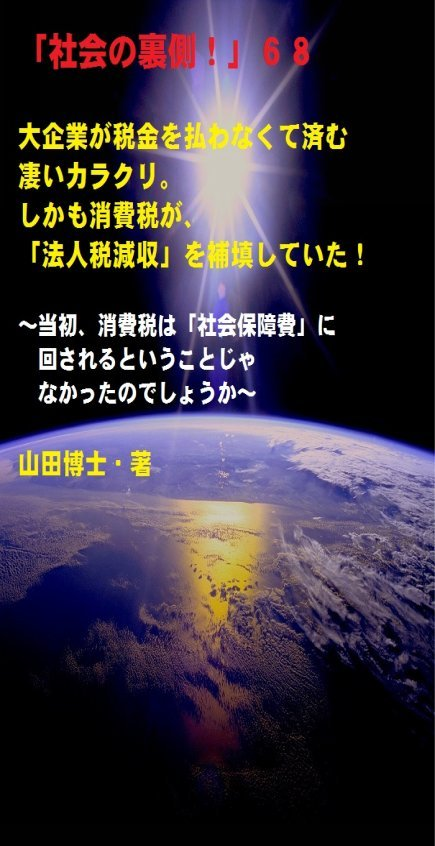

| 「社会の裏側！」６８......大企業が税金を払わなくて済む凄いカラクリ。しかも消費税が、「法人税減収」を補填していた！: 当初、消費税は「社会保障費」に回されるということじゃなかったのでしょうか | |
| 山田博士 | |
| kominitesyuppankai (2017) | |

「社会の裏側！」６８
大企業が税金を払わなくて済む凄いカラクリ。しかも消費税が、「法人税減収」を補填していた！
～当初、消費税は「社会保障費」に回されるということじゃなかったのでしょうか～
The social backside68
山田博士・著
★本書の著作権について
皆さんにはまったく関係ないことだと思いますが、複写、転送、抜粋、転載など、著作権侵害にあたる行為は絶対になさらないで下さい。本書の著作権は、山田博士にあります。今後、皆さんのお役に立ちたい活動が出来なくなりますので、その点、ぜひよろしくお願いします。ささささ、それでは、本書をどうぞ、ごゆっくりご覧下さい。
★概要
多くのかたは、消費税は社会保障費として必要なものなんだからと、頭から信じていらっしゃる。
福祉や年金や医療や、みんなが必要なものに間違いなく使われるのだとね。
だから、まさか、その消費税の税収が、そのまま「ほかの減収の穴埋めに使われていた」だなんて、そんなこと、思いもよりません。
もしそんなことが事実だったとしたら、もう気が狂うばかりの狂態を演じることになりませんか。
違いますか。
ぼくたちは、いままで、うまくコントロールされてきました。
じつは、ぼくたちがここ数年間支払ってきた消費税の総額とちょうど同じ金額が、「法人税減収」をしっかりと穴埋めしていた」のです。
こうなると、この消費税とは、いったい何のためだったのか。
と、そう思いたくなりますよね。
じつは大企業と言われる企業たちは、信じられないほど少ない法人税しか払っていないません。
まさか......と、思われるでしょうが、事実です。
確かに、マスコミたちが叫ぶように、一見、日本の「法定税率」は高く見えます。
それは間違いありません。
ただ、問題は、実際に払っている金額がどうか、です。
違いますか。
本当に、日本の大企業たちは、外国の企業たちより多額の税金を払っているのかどうか。
じつは、さまざまな抜け道があるんですね。
そして、「巨大企業ほど払う税金が少なくなっている」わけです。
ぼくたち一般庶民、とくにサラリーマンたちが強制的に支払わされている税金などと比べると、これは、明らかに不公平です。
見せかけの「法定税率」は高いのに「実際の実効税率」は低い。
こんなことが許されていいものかどうか。
詳しくは、本文をどうぞ、ご覧下さい。
驚かれますよ(笑)。
★目次
★（第１章）
多くのかたは、これらの消費税は社会保障費として必要なものなんだからと、頭から信じていらっしゃるわけですね。福祉や年金や医療や、みんなが必要なものに間違いなく使われるのだと。じつは......
★（第２章）
たとえば、三井住友ＦＧ、ソフトバンク、みずほＦＧなどの「実際の実効税率」を見てみて下さい。マスコミたちが叫んでいるあの高い「法定税率」はどこに存在していますか。まさに「無税である」かのようなカラクリは、ここにありました。それは......
★（第３章）
つまり、よく言われているように「企業優遇税制」というものが存在するわけなんです。たとえば、「租税特別措置による政策減税」を筆頭にして、「受取配当金益金不算入制度」、それに「外国税額控除制度」がそうなんですね。これを拡大解釈すると......
★（第４章）
この２６年間の法人３税の「累計の総減収額」は、なんとこの時期の消費税の税収の累計額とほぼ同額です。つまり、ぼくたちがせっせと支払ってきた消費税は、すべて「法人税減少の穴埋めに消えてしまった」わけですね。ぼくは消費税は「廃税にすべき」だと思っています。なぜなら......
★「社会の裏側！」シリーズの既刊本案内
★プロフィール
（最初に、恥ずかしながら、ぼくの紹介を簡単に述べておきます）
やまだ・ひろし。
１９４７年、福井県小浜（おばま）市生まれ。
食生態学者。元大学名誉教授。日本危機管理学会会員。
山田博士いのち研究所主宰。
ベトナム戦争の終わったちょうどその年１９７５年に、マンガストーリィと商品の実名で食べものや環境を取り上げた小冊子「暮しの赤信号」を発行する。実名で取り上げたため、社会に衝撃を与えた。各号１０万部単位で読まれ、隠れたベストセラーなどと、新聞などで何度も報道される。
同じ年、偶然にも有吉佐和子さんの「複合汚染」が発表され、この小冊子はその動きも受けて多くの学校の副読本でも活用された。
文化放送の「なっちゃこワイド」や、ＮＨＫ海外放送「ある日本人」でお話しをしたり、ギター弾き語り公演や、各自治体や学校などへの講演なども続けている。
現在は、メルマガ「暮しの赤信号」（「短縮版」と「完全版」の２種）を発行し、企業名や商品名などを公表して、世界中のかたに喜ばれている。
その読者層は、医師や看護師、栄養士、教師、会社経営者、自治体など、国の内外を問わず、多くの読者たちから毎日のように便りが届いている。年齢層も、１０代から８０代まで、さまざまだ。
また、ほぼ毎月第３土曜日に、東京の恵比寿でお茶飲み会「博々亭（ひろびろてい）」を開催。遠路から毎回読者が駆けて来ている。参加条件はメルマガ読者に限定だが、参加費用は無料だ。
このメルマガは、まぐまぐ！を始め３つのスタンドの合計で、数千部発行しているが、もしご関心のあるかたは、ご覧いただくと嬉しい。読者登録をされれば、毎回、無料でお手元に届く。月～水は本誌が、木～日は『３分で分かる！今週のワンショット「暮しの赤信号」』が、それぞれ早朝５時に届けられる。その時刻を楽しみにしている読者も多いとか。
短縮版メルマガ「暮しの赤信号」は無料。
下記で登録されれば、毎回、自動的に配信される。
「短縮版」（無料です）→ http://goo.gl/AFx95J
著書に 『脱コンビニ食！』（平凡社新書）
『危険な食品』（宝島社新書）
『その食品はホンモノですか？』（三才ブックス）
『ひとり月１万円食費で幸せ生活』（ＷＡＶＥ出版）
『最新 危ないコンビニ食』（現代書館）
『あぶないコンビニ食』（三一新書）
『続 あぶないコンビニ食』（同）
『外食店健康度ランキング』（同）
『山田博士の暮しの赤信号』第１巻～第５巻（亜紀書房）
『暮しの赤信号』小冊子＆ＣＤ－ＲＯＭ版全２３巻
『月１万少々の食費で、ザクザクと健康を稼ぐぼくの方法』
『いのち運転"即実践"マニュアル』各話
『山田流・時事呆談』各話
『セーラー服と警察犬』（小説）各巻......などがある。
山田のホームページ http://yamadainochi.com/
★はじめに......
こんにちは。
山田博士（やまだ・ひろし）です。
本書をご覧いただき、嬉しく思っております。
この内容をご覧いただくことで、少しでもあなたが「社会の裏側！」の流れにお気づきになり、そしてたとえ１ミリでもいい、即、行動されることを願っております。
ただ読むだけでは、誰でもできます。
それでは、あなたの身の回りの状況は石のように動きません。
本書をご覧になって、これは......と思うことがあれば、即行動なさって下さい。
お願いします。
その小さな行動の積み重ねこそが、あなたの明日を、１２色のバラ色で輝かせることになると信じております。
なお、この「社会の裏側！」は、今後もシリーズとして発刊して行くつもりです。
もしご関心があれば、「社会の裏側！」という名前で、アマゾンで検索してお調べ下さい。
さまざまな問題の社会の裏側！を詳しく、しかも楽しく述べております。
ぼくの名前で検索されても、見つかるのではないかと思います。
もし、「ＰＤＦ版」でご希望の場合は、ぼくの事務局まで遠慮なくお問い合わせ下さい。事務局→ http://goo.gl/t12Yx
ささささ、能書きはそこまでにします。
どうぞ、笑顔で、頁をお繰（く）り下さい。
お楽しみに！
山田博士
★（第１章）
多くのかたは、これらの消費税は社会保障費として必要なものなんだからと、頭から信じていらっしゃるわけですね。福祉や年金や医療や、みんなが必要なものに間違いなく使われるのだと。じつは......
たとえば、あなたが大根１本を買うとします。
そのとき、あまり払いたくなくても、「消費税」を払いますよね。
え？
んなもの、私は買ったこともない？
だから消費税なんかも払わない？
それに、大根１本の値段も、コマツナ１束の値段も、自慢じゃないけど、まったく知らないんですう、って？
あなた、人間ですか(笑)。
そのようなかたは、生きるのを、きっぱりと諦（あきら）めて下さい。そして、家畜のように、外食産業からただ与えられる「飼料」を、どうぞ今後も「楽しく」お食べ下さい。
自分の食べているものがどこから流れてきているのか、どこぞの国から届いているのか、そして、誰が作っているのか、そんなことも知らずに生きている存在は、「家畜」......と言います。
そうじゃありませんか。
ペットも含めて家畜たちは、いつも食べている食べものの内容など、知るよしもありません。
その原材料の中身も知らず、それを汗を流して作って下さっている農民のご苦労も知らず、日本の農業の行く末のことも考えず、ただただ与えられる食べものを食べている。
何度も言いますが、それは、家畜と言います。
あなたには、人間として、日本人として、尊厳高く生きてほしい。そして、あなたのあとに続く子孫たちの「道しるべ」に絶対なってほしい。
まあ、ぼくはふだんは優しいですから、あまり、あなたを責めたりはしません(誰の話？ 笑)。
でも、やはり、少しは言わせて下さい。
だから、はい、大根１本っ(笑)。
たとえば１５０円の大根を買おうとしますと、その際、当然のように「１２円」という大金が、いまでは必要です（将来はもっと必要になるかもしれません）。
つまり、その消費税を支払わないと、「必需品の大根でさえ」、手元には来てはくれません。
そして多くのかたは、これらの消費税は社会保障費として必要なものなんだからと、頭から信じているわけですね。
福祉や年金や医療や、みんなが必要なものに間違いなく使われるのだと。
だから、まさか、その消費税の税収が、そのまま「ほかの減収の穴埋めに使われていた」だなんて、そんなこと、思いもよりませんよね。
もしそんなことが事実だったとしたら、もう気が狂うばかりの狂態を演じることになりませんか。
違いますか。
ぼくたちは、いままで、うまくコントロールされてきました。
じつは、ぼくたちがここ数年間支払ってきた消費税の総額とちょうど同じ金額が、「ある減税の分をしっかりと穴埋めしていた」のです。
その減税分とは何なのか。
こうなると、この消費税とは、いったい何のためだったのか。
と、そう思いたくなりますよね。
じつは......。
★（第２章）
たとえば、三井住友ＦＧ、ソフトバンク、みずほＦＧなどの「実際の実効税率」を見てみて下さい。マスコミたちが叫んでいるあの高い「法定税率」はどこに存在していますか。まさに「無税である」かのようなカラクリは、ここにありました。それは......
じつは大企業と言われる企業たちは、信じられないほど少ない法人税しか払っていないません。
まさか......と、思われるでしょうが、事実です。
あとで述べますが、その減税分を、ぼくたちの血と汗と涙で支払った消費税が補てんしているわけですね。
こんなこと、とても信じられないでしょう。
確かに、マスコミたちが叫ぶように、一見、日本の「●●」は高く見えます（●●は下記の設問を）。
それは間違いありません。
外国と比べてみましても、現在の東京都の法定税率は３５．６４％。
それに比べて、シンガポール１７．００％、イギリス２３．００％、韓国・ソウル特別市の２４．２０％......などは、確かに低いですよね。
う～む、マスコミの言うことは本当だったのか。
と、たいていのかたは認めてしまうことでしょう。
でも、そうなのか。
問題は、実際に払っている金額がどうか、です。
違いますか。
本当に、日本の大企業たちは、外国の企業たちより多額の税金を払っているのかどうか。
じつは、さまざまな抜け道があるんですね。
そして、「巨大企業ほど払う税金が少なくなっている」わけです。
ぼくたち一般庶民、とくにサラリーマンたちが強制的に支払わされている税金などと比べると、これは、明らかに不公平です。
見せかけの「法定税率」は高いのに「実際の実効税率」は低い。
こんなことが許されていいものかどうか。
なぜ、上記でぼくが「実際の実効税率」と呼ぶのかと言いますと、マスコミたちは「法定税率」イコール「実効税率」と呼んでいるわけです。
これは、明らかに誤用しているからなんですね。
まあ、意図的なのかもしれませんが、こういうところに、マスコミたちが大企業の意向を受けているんだなあと、ぼくはつくづく思ってしまうんですね。
皆さんはいかがですか。
「法定税率」イコール「実効税率」なんかではけっしてありません。
大企業たちが実際に払っている「実際の実効税率」は、もっともっと少ないわけですから。
ある調査があります。
いいですか、驚かないで下さい。腰を落ち着けてご覧下さい(笑)。下記は、各企業たちの「実際の実効税率」です（出所：中央大学名誉教授の富岡幸雄さん調査による 。 201 4年 1 0月 2 9 日）。
これによりますと......、
三井住友ＦＧが、０．００１％。
ソフトバンクが、０．００３％。
みずほＦＧが、 ０．０９７％。
丸紅が、 ７．１２％。
第一三共が、 １１．１７％。
キリンＨＤが、１２．５０％......。
う～むむむのむむ......。
いかがです？
「法定税率」の「３５．６４％」は......どこにあります？(笑)
上記は、法人税の合計「法定税率」が３８．０１％のときのものですので、現在ではもっと少ないことでしょうね。
と言うのは、２０１４年４月から、なんと「法定税率」がもっと低くなり、３５．６４％になっております。
いつの間にか、大企業にはいよいよ優しく、一般国民にはますます冷たくなっているようですなあ......(笑)。
どうして、このようなことが起こるのかと言いますと......。
★（第３章）
つまり、よく言われているように「企業優遇税制」というものが存在するわけなんです。たとえば、「租税特別措置による政策減税」を筆頭にして、「受取配当金益金不算入制度」、それに「外国税額控除制度」がそうなんですね。これを拡大解釈すると......
もうご存じでしょうが、税額というのは、課税ベースである所得を計算して、そこに、ある税率を掛けて算出されますよね。
ご自分で事業をされているかたは、こんなこと、もうとっくにお分かりかと思います。
つまり、この課税ベースが少額になればなるほど、税負担も少なくなる。
そうですよね。
お分かりですよね。
そう、ここにカラクリがある......というわけです(笑)。
つまり、よく言われているように「企業優遇税制」というものが存在するわけなんです。
ちょっと固い言葉が続いて申し訳ありませんが、「租税特別措置による政策減税」を筆頭にして、「受取配当金益金不算入制度」というものなどが、それなんですね。
この優遇制度というのは、内国法人（つまり、国内に本店または主たる事務所を有する法人）が、他の内国法人から配当などを受けた場合、それが子会社や関係会社の株式などに関わる配当金であれば、１００％課税所得から除外されるわけです。
そして、子会社や関係会社以外の場合であれば、その５０％が課税所得から除外される、というものなんですね。
これじゃ、みんな、そうするじゃありませんか。
課税所得から除外されるわけですから。
そのほかにも、「優遇」はあります。
つまり、「外国税額控除制度」。
これもじつは大問題でしょうね。
つまり、国際的な二重課税を排除するために作られた制度なんですが、まあ詳しくはここでは述べませんけれど、この制度を利用して、一定の範囲内で納税額からの控除が認められているわけなんです。
大企業たちは、この控除対象を「拡大解釈する」ことで、税負担を軽減しているわけですね。
よく考えている......(笑)。
上述の富岡さんは、かつて、ある論文を書くために調査し、三菱商事が１９８５年（昭和６０年）３月期に、５７１億９２００万円もの課税所得を申告しているにも関わらず、法人税を１円も払っていないことを明らかにしています。
もちろんこれも、いま述べた「外国税額控除制度」を拡大解釈することによってもたらされた結果でした。
いいでしょうか。
この三菱商事が、１円も税金を払っていないわけですよ。
ということは、この会社は、日本国内では何も営業をしていないということになりますよね。
だって、国内で営業をしていれば、どんな企業でも利益があれば税金を払うわけですから。
そこで、この富岡さん。
本当にそうなのかを確認するために、三菱商事の本社まで行ったそうです。
そうしたら、そこではちゃんと、多くの人たちが働いていたと(笑)。
彼曰く、「いったい彼らはあそこで何をしているのかと、聞いてみたくなった」......(笑)。
ぼくだったら、実際に聞いてみます。
「あのお、皆さん、このビルの中で何をされているのですかあ。お昼までにはまだ時間がありますし、お食事の時間でもありませんし。確か、何も営業はしていないのでしたよね。だって税金はゼロのようですし......。いったい、夕方まで、皆さん、何を......」
きっと、つまみ出されるだろうなあ(笑)。
★（第４章）
この２６年間の法人３税の「累計の総減収額」は、なんとこの時期の消費税の税収の累計額とほぼ同額です。つまり、ぼくたちがせっせと支払ってきた消費税は、すべて「法人税減少の穴埋めに消えてしまった」わけですね。ぼくは消費税は「廃税にすべき」だと思っています。なぜなら......
このような現実があるのに、法人税はさらなる引き下げが継続して、いまでは、大幅な減少となっています。
法人３税（法人税、法人住民税、法人事業税）の総減収額は、もの凄いものがあるんですね。
ちょっと見てみましょうか。
またまた驚かないで下さい。
１９８９年度からこの２６年間に、「累計の総減収額」は、なんと２５５兆円。
この時期の消費税の税収の累計が、２８２兆円ですから、ぼくたちが大根１本を買うためにとせっせと支払ってきた消費税総額は、そのまま、こうした「法人税減少の穴埋めに消えてしまった」......と言えます。
そうですよね。
ほぼ、同額ですから......。
でも政府は、この「法定税率」をさらに２０％台にまで下げると叫んでおります。
こうなると、「消費税率を１０％にする」なんて、まったくのまやかしであると、言えませんか。
だって、消費税が上がってから、もらえる年金が増えましたか？医療費の自己負担が減りましたか？
これ、すべて逆になっているじゃありませんか。
皆さん、これからは、ぜひご自分の頭でじっくりとお考え下さい。
しかし、どうして大企業だけにこうした優遇措置をするのか。
上述で計算したように、資本金が１００億円以上の大企業の場合は、実質的に「実際の実効税率」１７．２％ほどですが、資本金１億円～５億円の中堅企業は、３７．９２％。
そして小規模企業（資本金１０００万円以下）になると、３０．０７％が「実際の実効税率」となっているわけですね。
つまり、大企業ほど優遇されている。
これじゃ、官僚たちの「天下り先」を優遇しているに過ぎないと言えるじゃないですか。
このような状態が今後も続きますと、間違いなく、この日本社会では、さらに格差が広がるでしょうね。
ぼくはそう痛感しております。
いかに高校や大学の新卒の学生たちが就職率１００％近くだと言って浮かれていても、必ず、数年先には壁が待っています。
いまこそ、日本が世界に発信しなくてはならないという時期に、大多数の国民がうちひしがれていたのでは、どうなりますか。
いずれにしても、ぼくは、消費税は不要だと思っています。
当初から、ぼくは周囲に、そのことを叫んできました。
３％から５％に値上がるときにも、多くの政党たちは「５％反対」なんて叫んでいましたが、ぼくは「消費税そのものを廃税に」と、空に向かって叫んでおりました(笑)。
だって、このような間接税は、弱者ほど痛めつける結果につながるわけですから。
貧者が大根１本買うときに払う１２円と、富者が払う１２円。
どちらが負担が大きいですか。
間接税とは、そういうことなんですね。
贅沢（ぜいたく）なものに消費税をウンと掛けるのなら分かります。
でも、米や野菜や家賃や医療費や教育費などに、等しく消費税をかけるなんて、これこそ、ぼくから言えば、狂気の沙汰（さた）。
そうそう、あのころをいま、思い出しました。
と言うのは......。
振り返れば、あの中曽根さんが「売上税（消費税のこと）などは絶対にやらない」と言って選挙で大勝しました。
でも、すぐにその「売上税を始める」なんて言い出したために退陣してしまいました(笑)。
そして、そのあとを継いだ竹下内閣は、中曽根さんがまさに騙（だま）し討ち選挙で得たその数で、今度は「消費税法案」を通したのでした。
そうですよね。
国民は、こういう歴史をけっして忘れません。
忘れてはいけないのです。
あなたも、そうですよね。
え？
そんないきさつがあったのかって？
またまた、そんな、あなた。
そんな呑気（のんき）なことを言って......。
ぼくでさえ、あの当時のことは、つい先日のように覚えているというのに。
でも、昨日食べた夕食のメニュ。
いったい、何だったっけなあ。
メザシでもなかったし、煮物でもなかったし、タマネギとニンジンのあのメニュでもなかったし、大豆と青菜をいっしょに煮たメニュでもなかったし......。
はて、はて、はて......。
そうだ、思い出したぞ。
さっきから、お腹が空いていたのを思い出した！
ハハハ......。それじゃまた次回ね。ご機嫌よう。（山田博士）
▼設問です▼
設問→ 上記の文章を読み、下記の●●にあてはまるものを、選択語句から選んでみよ。ただし２文字とは限らない。
「確かに、マスコミたちが叫ぶように、一見、日本の『●●』は高く見えます」
【選択語句→ 相続税率、法定税率、酒税率】
■答え■
下記のとおりです。でも、先に答えを見てはいけません。
本文を再度ご覧になり、十分想像してから答えをご覧下さい。
きっとその繰り返しが、あなたの明日を輝かせることになると思っています。
答え→ 法定税率
（了）
★（最後にひとこと）
ここまでお読みになって下さり、ありがとうございました。
ここで述べているような内容の最新情報を、メルマガ「暮しの赤信号」では述べております。
企業名や商品名も公表していますので、もしご関心のあるかたは、下記から登録されれば、毎回、自動的にお送りします。
「短縮版」は無料です。
毎回、早朝５時に、あなたのところへ配信します。
現在、全世界で数千部を配信しておりますが、楽しい文体が人気のようですよ。早朝５時をお待ちになっているかたも......。
その日から役立つ内容です。
「短縮版」（無料です）→ http://goo.gl/AFx95J
メルマガ上で、また、お逢いしましょう！
＝＝＝＝＝＝＝＝＝＝＝＝＝＝＝＝＝＝＝＝＝＝＝＝＝＝＝＝＝＝＝
★「社会の裏側！」シリーズの既刊本案内★
（山田博士・著）
「電子版」と「ＰＤＦ版」があります。お好みのほうで、どうぞ。
～これだけたくさん、マスコミも言わない内容が、存在します！
ご関心のあるものから、ご覧ください～
＝＝＝＝＝＝＝＝＝＝＝＝＝＝＝＝＝＝＝＝＝＝＝＝＝＝＝＝＝＝＝
★「電子版」の場合は、アマゾンで、検索なさってください。すぐ に出てきます。
★「ＰＤＦ版」の場合は、下記の事務局までご連絡ください。
事務局→ http://goo.gl/t12Yx
（「電子版」は５８５円前後。「ＰＤＦ版」は１０００円前後ですが、数が多くなれば、かなりの割引をしています）
【１】社会の裏側！ １......子宮頸ガンワクチンで女子中高生が泣いている！
～「このまま死んでしまうのではないか」～全国子宮頸（けい）がんワクチン被害者連絡会による記者会見で、女子中高生の両親たちが、重篤な症状を打ち明けました～
専用ブログ→ https://goo.gl/BMwQTm
【２】社会の裏側！ ２......ペットボトルを「ペット」にしてはいけない。新生児の男女比が驚くことになっている！
～グリーンランドで、新生児の「男女比」が驚くべき数字になっていますが、あなたが加害者でないと言えますか～
【３】社会の裏側！ ３......牛丼店「すき家」が、従業員を貧困のどん底に！
～アベノミクスって、じつは「アベノリスク」じゃないの～
【４】社会の裏側！ ４......小学校の低学年児に「向精神薬」を処方する医師たち！
～なぜ精神医学では、やりたい放題なのか～
【５】社会の裏側！ ５......映画「世界が食べられなくなる日」。原子力、「遺組み」の現実！
～２０世紀に世界を激変させた"二つのテクノロジー"とは～
【６】社会の裏側！ ６......蚊帳（かや）に練り込まれた「毒物」ってご存じでした？
～ＷＨＯや住友化学たちがしていることとは～
【７】社会の裏側！ ７......あなたは、放射性物質が濃縮された「エコセメント」で住宅を建てますか？
～この施設の近くは、フクシマ第一原発２０キロ圏内並みの汚染度だった！～
【８】社会の裏側！ ８......いまや加工食品の甘味のほとんどは「異性化糖」だ！遺伝子組み換えコーンによるこの甘味料が日本人を壊す
～血糖値を急激に上げて糖尿病リスクを高める怖さとは～
【９】社会の裏側！ ９......ＬＥＤ照明の「人体実験国」ニッポン！
～蛍光灯導入時にも問題になった、青色光の問題とは何なのだろう～
【１０】社会の裏側！ １０......コーラの着色料に「発ガン性」の疑惑が出た！
～日本のコカ・コーラには、米国のそれより１８倍も多い「４－ＭＩ」が含まれている事実
【１１】社会の裏側！ １１......「香料」のせいで死ぬ思いの人たちへ！日本人の母乳や脂肪から初めて検出された「人工のムスク」
～化学物質過敏症患者の８割が「香料」を発祥物にしている～
【１２】社会の裏側！ １２......子どもの「健康格差」が凄まじい！なんと「就学援助」の小中学生が１４２万人になった
～食事内容をこう変更すれば、解決につながることも～
【１３】社会の裏側！ １３......ＴＰＰと私設法廷。じつはこの「ＩＳＤ条項」こそが日本乗っ取りの要だった！
～なぜ弁護士たちが、この問題に関して「緊急に結束」しようとしているのか～
【１４】社会の裏側！ １４......築地市場移転の本当の狙い！この裏に、電通と日本ＴＶ、そしてＧＳ社が蠢いていた！
～豊洲の汚染問題の陰で、水産物の流通を外国資本に支配させようという試みがある～
【１５】社会の裏側！ １５......ミツバチたちが消えたら、人間は「４年も」生きられない！
～ネオニコチノイド系農薬が日本で規制されない理由は、お米問題だった......～
【１６】社会の裏側！ １６......偽装食品がなぜ広がるのか！阪急阪神ホテルズのニセ食材事件なんて、氷山の一角に過ぎない
～あなたが外食に溺れている限り、今後も被害者になるだろう。それを防ぐ方法とは......～
【１７】社会の裏側！ １７......過去最大の「米偽装事件」。それは米離れの若者が原因だった！
～イオンやダイエーの国産米弁当などに外国産米が使われた「三瀧商事」事件は、氷山の一角だ～
【１８】社会の裏側！ １８......総合ビタミン剤などのサプリメントは、ガンや心疾患のリスクを高める！
～米国国立がん研究所の最近の調査で、明らかになった事実とは～
【１９】社会の裏側！ １９......海に漂うプラスチック破片には、人類が過去生産してきた多くの有害化学物質、とくに「ＰＯＰｓ」が含まれていた！
～太平洋の真ん中に、日本列島１０倍大の「プラゴミ島」があるのをご存じか～
【２０】社会の裏側！ ２０......高血圧症患者が、「人為的に量産」されている！
～国民の「４０００万人」が高血圧だなんて、こんな滑稽なことはない。厚労省が１社を刑事告発したことで明らかになった癒着とは～
【２１】社会の裏側！ ２１......子どもの貧困は、「日本の未来」を左右する！
～社会へ巣立つ子どもに「数百万円もの借金」を背負わせたいのか～
【２２】社会の裏側！ ２２......サプリメントのほとんどが、中国産になっていた！
～「杜仲茶」には残留農薬、「ウコン」には発ガン物質、「イチョウの葉エキス」にはアレルギー......なんともはや～
【２３】社会の裏側！ ２３......食品の「製造所固有記号」の秘密。あなたにこの記号が読めるか！
～改めて問う。あの「冷凍食品農薬混入事件」への対応が遅れた理由。今後の大事件を防ぐために～
【２４】社会の裏側！ ２４......ドライバーの「生活習慣病」と人身事故との関係！
～突然の病気で運転できなくなった職業運転手の病名は、何だったか～
【２５】社会の裏側！ ２５......武田薬品工業のニセ高血圧治療薬「ブロプレス」問題は、何を物語っているのか。その衝撃的背景！
【２６】社会の裏側！ ２６......砂糖は「炭酸飲料１缶でアウト」というＷＨＯ指針の理由とは！
～ダイエット希望者のため、「脂肪の替わりに砂糖を使う」企業が増えている～
【２７】社会の裏側！ ２７......なんと「発達障害児」の急増に、「農薬」が関係していた！
～ＥＵでは農薬の規制強化へ、日本ではトホホ......規制「緩和」へ～
【２８】社会の裏側！ ２８......田中正造「真の文明は、山を荒らさず、川を荒らさず、村を破らず、人を殺さざるべし！」
～明治政府にこう迫った彼。いま「真の大人」はどこへ消えたのか～
【２９】社会の裏側！ ２９......治験。ネットの求人欄で、「とくに日本人」を募集するアメリカでの実態！
～日本人ばかりをかき集める「専門会社」が存在するとは。そしてそこに委託している製薬企業名とは～
【３０】社会の裏側！ ３０......「味噌」が、放射性物質を除去するこの実験。世界の人に知らせたい！
～今後、これらの「微生物」たちの働きに注視すべきだろう～
【３１】社会の裏側！ ３１......「夢のリニア新幹線計画」が、日本人を壊（こわ）す４大理由！
～なぜＪＲは、とくに「電磁波」が車内で乗客たちに与える深刻な影響を語らないのだろう～
【３２】社会の裏側！ ３２......「食べもの戦争」は、異常気候の変動でこう勃発する！
～ＩＰＣＣ報告で分かったこの衝撃的事実。そして、「フードマイレージ」がアメリカの３倍もある日本の責任とは～
【３３】社会の裏側！ ３３......「ＳＴＡＰ細胞」大騒動と、理研コンツェルンのねらいとは！
～はたして人類は、安全な「人体部品」を製造できるのだろうか～
【３４】社会の裏側！ ３４......遺伝子組み換えの「不妊サケ」が、食卓に並ぶ日が来た！
～野生のサケより体重が２５倍ほどもある「遺組みサケ」の養殖が、ついに始まった～
【３５】社会の裏側！ ３５......カネボウ美白化粧品や、ＤＨＣ社「ディープクレンジングオイル」にみる「医薬部外品」の陰謀とは！
～なぜこの「医薬部外品」制度が、日本にしかないのだろう～
【３６】社会の裏側！ ３６......食べものに「放射線」を照射すると、その食品自体から放射線が出る危険性が分かった！
～じつは、この「誘導放射能」についての研究は、「軍のベール」の中だけでなされてきたのだ。今回のこのデータで、その一片を見てほしい～
【３７】社会の裏側！ ３７......原発汚染時代の、ニッポンの「魚」の食べかた！
～動かない海藻の放射性物質汚染実態を見れば、その海の状態がよく分かる。検出値から見えるものとは～
【３８】社会の裏側！ ３８......じつは「家族農業」が、日本の飢餓リスクを救う！
～大量生産とは均質性を要求するものだ。いまの時代に必要なのは、「多様性と地域性」じゃないのか。ＤＶＤ「ヴァンダナ・シヴァの～」が主張したこととは～
【３９】社会の裏側！ ３９......遺伝子組み換え「ご飯」が、もうまもなくあなたの食卓に！
～とうとう茨城県で、「遺伝子組み換え稲」の試験栽培が始まった。そして、米作農民がゼロになる日も近づいて......～
【４０】社会の裏側！ ４０......「女性の目線」に立った原発レポート！
～「チェルノブイリその後」で分かった数年後の健康状態。小児期よりむしろ、８歳～１６歳のほうが影響があることが分かった～
【４１】社会の裏側！ ４１......糖尿病予備軍の人が、「熱中症」で亡くなるこの衝撃理由！
～ふだん多くの糖類を体に入れていると脱水状態になる。それに砂糖は、ビタミンＢ１などを壊し、ストレスにも弱くするのだ～
【４２】社会の裏側！ ４２......子どもの好きな食品に、これだけも遺伝子組み換え作物が使われていた。実名リスト付き！
～フランスでは安全性を見直しているのに、なぜ日本では次々と承認されるのだろう～
【４３】社会の裏側！ ４３......自閉症などの発達障害は、遺伝じゃなく、農薬などの「環ホル」が原因であることが分かった！
～文科省の調査では、通常学級のなんと６％ほどの子たちに「発達障害のリスク」があるため、日本人の未来にとって、早急の対策が必要だ～
【４４】「社会の裏側！」４４......ファッション企業の「ファーフリー」（毛皮は扱わない）の動きが広まったが、中国ではアンゴラウサギたちが今日も生きたまま！
【４５】「社会の裏側！」４５......広く使われている「人工甘味料」が、実際には、糖尿病のリスクを逆に高めていた。その衝撃的な事 実とは！
～コカ・コーラ社が、「ダイエットコーク」の安全性を訴えた全米広告キャンペーンのおかしさ～
【４６】「社会の裏側！」４６......ミツバチが消えた。じつは、あなたがシックハウスや居間の殺虫剤で倒れる原因も、これと同じだった！
～これら「ネオニコチノイド系農薬」の商品名を、ここでお教えしたい。今日からぜひ注意してほしい～
【４７】「社会の裏側！」４７......愛するペットに「ペットフード」を与えてはいけない！
～多くの人の悲しい誤解と、ペットの病気や長生きについて～
【４８】「社会の裏側！」４８......学校給食の栄養士が「本当は」使いたくない中国食材とは！
～じつは「センター化」が、この事態を招いた元凶だった～
【４９】「社会の裏側！」４９......なぜ、「栄養ドリンク剤」を未成年に禁止している国があるのか！
～無水カフェインの怖さをご存じか。それに、「異性化糖」のために糖尿病のリスクがグングン高まっている事実とは～
【５０】「社会の裏側！」５０......あなた、「老人難民」になりますか。それとも死にますか？
～１６０万人もいる「要支援１と要支援２」の人たちは、この「医療・介護総合推進法」のために、介護保険から外されることに！～
【５１】「社会の裏側！」５１......甘味料「Ｓｐｌｅｎｄａ」でダイエット中のかた、ご愁傷さまです！
～実際には、砂糖同様のカロリーのある物質が９９％も含まれていた。それに甘味料「スクラロース」にも大疑惑が存在していた～
【５２】「社会の裏側！」５２......バター不足は、「農畜産業振興機構」という天下り団体の自作自演だった！
～「白モノ」利権を握っている彼らが、税金を無駄遣いしていた～
【５３】「社会の裏側！」５３......青色「ＬＥＤ」のために、世界から日本が糾弾される日！
～日本人のノーベル賞受賞で浮かれている場合じゃない。この青色光こそが、脳のメラトニンの分泌を抑え、目の網膜損傷を起こす犯人だった。その対策とは～
【５４】「社会の裏側！」５４......キレる子どもと切っても切れない食生活！
～わずか１０日間ほどで、攻撃的な性格が収まってしまうこの現実をご存じか。なぜ日本ではこれらの「添加物」が放置されるのか～
【５５】「社会の裏側！」５５......正月の「しめ縄」から、放射性物質のセシウムが年ごとに増えている現実をどう見るか！
～しかも、「仮設焼却炉」で３４０００ベクレル／ｋｇの稲わらを焼却するとは～
【５６】「社会の裏側！」５６......「プチ脳梗塞」が３０代から始まっている。人生を途中下車しないための簡単な方法はこれだ！
～現在、なんと５０代の「３人に１人」がこの症状になっている～
【５７】「社会の裏側！」５７......男女両方の「不妊症状」が普遍的になった背景は、これだ！
～「子どもが生まれるのは奇跡に近い......」と嘆く医師たち～
★
★
★
■「社会の裏側！」６２......「ペットボトル茶」を、本当のお茶だと信じて飲んでいる悲しい日本人！
～どの商品にも「合成ビタミンＣ」が添加されている理由と、中国輸入の汚染茶の茎（くき）から作られる「トンデモ茶」の
実態～
■「社会の裏側！」６３......抗菌石鹸は使ってはいけない！それは当然だけど、今回の事件をきっかけに、「抗菌生活」の是非を考えようよ
～抗菌剤「トリクロサン」は、抗生物質の耐性菌を作ったり、「環ホル」の可能性が指摘されていますが、もっと大切なこととは～
■「社会の裏側！」６４......コンビニの「おにぎり」が腐敗しないわけ。ＰＨ調整剤の正体とは！
～どおりで、強烈な「合成保存料」が使われなくなったはず。その問題点と、添加「おにぎり」や「サンド」の実名をお教えしよう～
■「社会の裏側！」６５......市販薬の「副作用」を、甘く見てはいけない！
～左目をほとんど失明し生死をさまよった２０歳の彼女。５年間で千件もの「副作用」の実態と、有名な市販薬に含まれるこの物質と～
■「社会の裏側！」６６......「モンサント社」という企業を、少し考えてみようと思います！
～ヒロシマ原爆の開発に取り組み、７３１部隊にも関連し、いまは「遺組み」によって世界の農民を苦しめているこの企業の源とは～
■「社会の裏側！」６７......次世代電力計「スマートメーター」の電磁波が、なぜこれだけも重大な影響を与えるのだろう。その具体的な数値をお伝えしよう！
～外国で「健康被害」による反対運動が起こっている事実と、個人情報の漏洩問題とは～
★もし、上記でご関心のある作品があれば、ぜひどうぞ！
「ＰＤＦ版」の場合は、事務局までご連絡ください。
お待ちしています。
事務局→ http://goo.gl/t12Yx
★奥付
「社会の裏側！」６８
大企業が税金を払わなくて済む凄いカラクリ。しかも消費税が、「法人税減収」を補填していた！
～当初、消費税は「社会保障費」に回されるということじゃなかったのでしょうか～
The social backside68
山田博士・著
第１刷発行日：2017/06/19
－－－－－－－－－－－－－－－－－－－－－－－－－－－－－－
著／山田博士
発行／山田博士いのち研究所
105-000 1 東京都港区虎ノ門２－２－５共同通信会館Ｂ１Ｆ
http://yamadainochi.com/
事務局→ http://goo.gl/t12Yx
－－－－－－－－－－－－－－－－－－－－－－－－－－－－－－